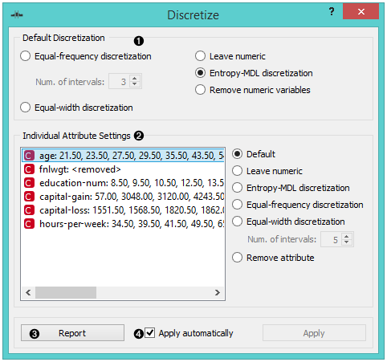
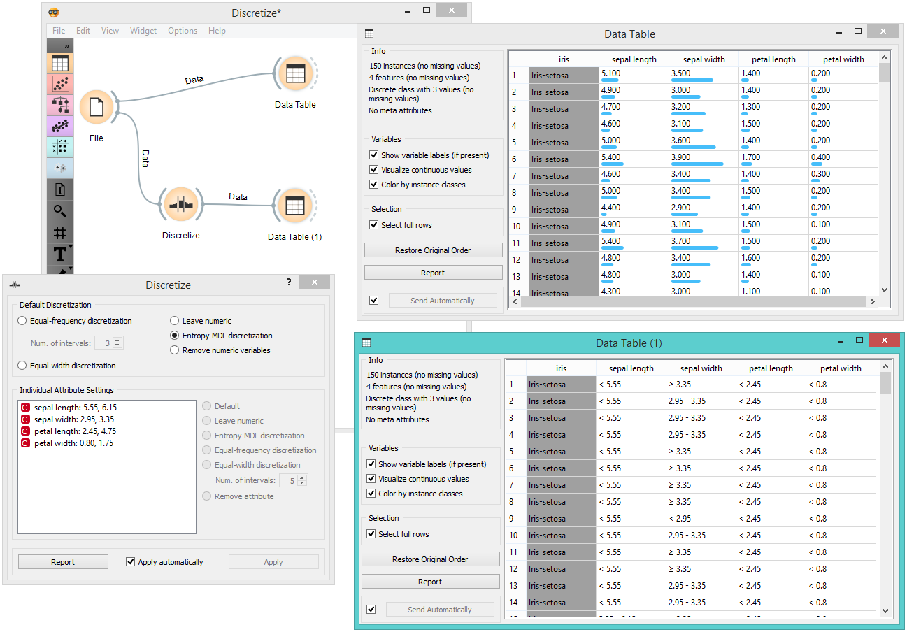

Discretize
Discretizes continuous attributes from an input dataset.
Inputs
- Data: input dataset
Outputs
- Data: dataset with discretized values
The Discretize widget discretizes continuous attributes with a selected method.

- The basic version of the widget is rather simple. It allows choosing between three different discretizations.
- Entropy-MDL, invented by Fayyad and Irani is a top-down discretization, which recursively splits the attribute at a cut maximizing information gain, until the gain is lower than the minimal description length of the cut. This discretization can result in an arbitrary number of intervals, including a single interval, in which case the attribute is discarded as useless (removed).
- Equal-frequency splits the attribute into a given number of intervals, so that they each contain approximately the same number of instances.
- Equal-width evenly splits the range between the smallest and the largest observed value. The Number of intervals can be set manually.
- The widget can also be set to leave the attributes continuous or to remove them.
- To treat attributes individually, go to Individual Attribute Settings. They show a specific discretization of each attribute and allow changes. First, the top left list shows the cut-off points for each attribute. In the snapshot, we used the entropy-MDL discretization, which determines the optimal number of intervals automatically; we can see it discretized the age into seven intervals with cut-offs at 21.50, 23.50, 27.50, 35.50, 43.50, 54.50 and 61.50, respectively, while the capital-gain got split into many intervals with several cut-offs. The final weight (fnlwgt), for instance, was left with a single interval and thus removed. On the right, we can select a specific discretization method for each attribute. Attribute “fnlwgt” would be removed by the MDL-based discretization, so to prevent its removal, we select the attribute and choose, for instance, Equal-frequency discretization. We could also choose to leave the attribute continuous.
- Produce a report.
- Tick Apply automatically for the widget to automatically commit changes. Alternatively, press Apply.
Example
In the schema below, we show the Iris dataset with continuous attributes (as in the original data file) and with discretized attributes.
